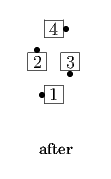
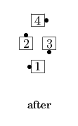

Follow to a Diamond
From a Mini-Wave Box or applicable 2x2 T-Bone: Trailers Follow Your Neighbor and Spread as Leaders Box Circulate once and a half. A Mini-Wave Box ends in a Diamond, a 2x2 T-Bone usually ends in a Wave.
 

© Copyright 2004-2017 Vic Ceder and CALLERLAB Inc., The International Association of Square Dance Callers. Permission to reprint, republish, and create derivative works without royalty is hereby granted, provided this notice appears. Publication on the Internet of derivative works without royalty is hereby granted provided this notice appears. Permission to quote parts or all of this document without royalty is hereby granted, provided this notice is included. Information contained herein shall not be changed nor revised in any derivation or publication.